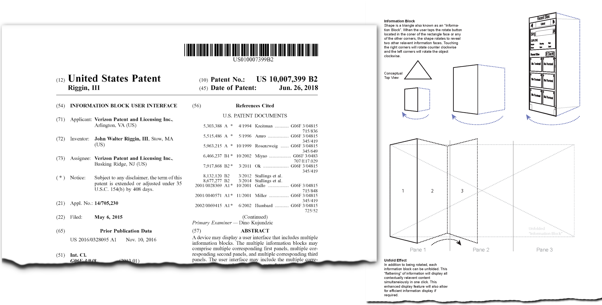

Design & Innovation
The contents of this section are samples showcasing design problem-solving and the variety of deliverables I will produce depending on the project. Often, design is thought of as wireframes, mockups of user interfaces, and prototypes, but these are only visual components of a project. Innovative design is so much more, often bluring with very technical aspects of a solution.
Strategic New Experience Design
I conceptualize, document, and secure the intellectual property I produce when working on a project; particularly, when transformational innovative thinking has occurred. This patented example was created to provide a strategic and consistent user experience on any screen or interactive information system, affording the user efficient and customizable access and organizational capability.
View patent US10007399B2 on Google Patents.
Part of evolving device requirements is considering users' known friction points with technology. This conceptual algorithm was an exploration for automating naming a phone's mobile hotspot SSID based on prior user input/work when the device is initially set up.
This technology enhancement aims to provide value to the user by broadcasting a customized Wi-Fi SSID when a device's mobile hotspot feature is turned on. The personalized SSID assists users in connecting to the hotspot by broadcasting an easily recognizable SSID. This speeds up the discoverability and connectivity of devices joining the Wi-Fi network, especially in high-density areas where long cryptic listings of SSIDs broadcast by unknown access points are common. This is particularly beneficial for networks that do not have a user-defined name.
Co-author David Philbin
I utilize wireframe flows as a low fidelity way to communicate and capture both concept expolorations and evolving solution designs based on requirements. I utilize this technique during all stages of development; particularly, if alternative or new approaches need explored due to evolving requirements based on stakeholder feedback obtained during user testing.
Service Blueprinting


I create service blueprints to provide a detailed visual map of a solution’s operational processes, touchpoints, and user interactions. By laying out the entire solution journey, these maps help identify pain points, inefficiencies, and opportunities for improvement from both the user’s and an organizational perspective. This holistic view is crucial for creating seamless and intuitive user experiences, ensuring that every aspect of the service is aligned with user needs and expectations along with providing value to other cross-functional project stakeholders.
I create UX flows that detail both User and System actions and the experience based on various system criteria. These flows can be created in a static system or developed in a tool like Figma where a design system is utilized and the work can quickly be tested with users as a prototype.
I also build my flows with various level instances of components to switch between a low fidelity look and a high fidelity system representation.
Designing solutions requires gathering stakeholder feedback throughout the developent process. I use a range of prototyping techniques to test ideas, requirements, and design approaches.
Fidelity of the prototypes can range from pencil sketches/printouts on paper to highly complex, realistic system simulations; All of which have a place in the development process.
I utilize any technique required to get the necessary feeback at a given point in the development lifecycle to evole the project or aid in decision making based on participant feedback. Figma/Sketch/Adobe XD, Miro/Mural/FigJam, HTML, Powerpoint, etc., are typical tools I use to build my prototypes with.


{kind=link}
{kind=link}
{kind=link}
{kind=link}
{kind=link}
{kind=link}
{kind=link}
{kind=link}